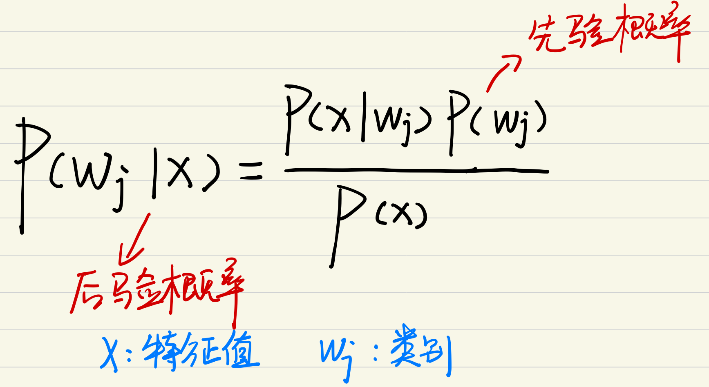
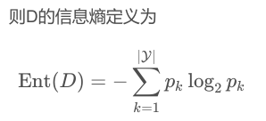
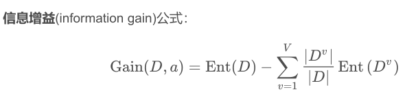
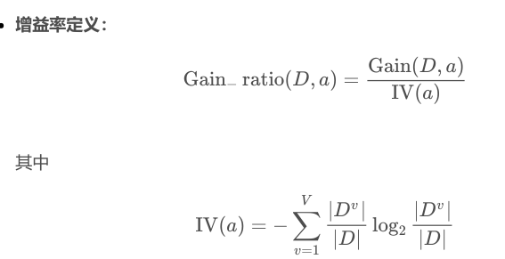
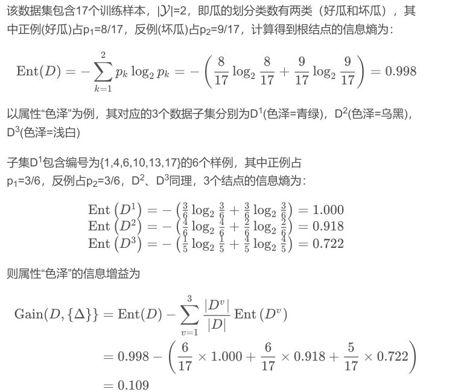
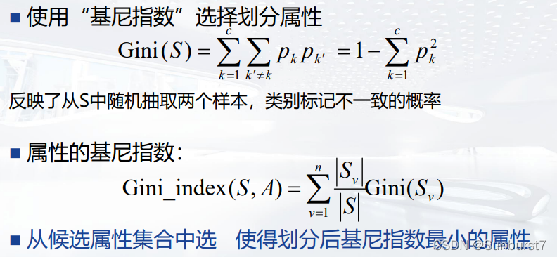
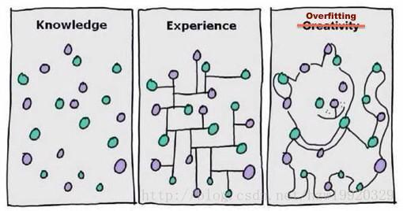
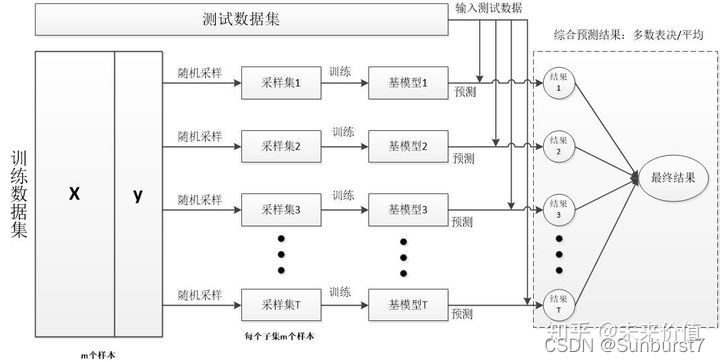
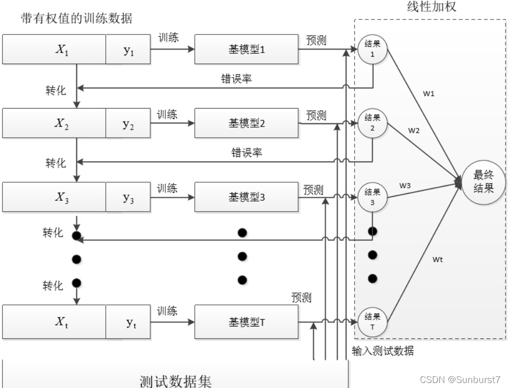
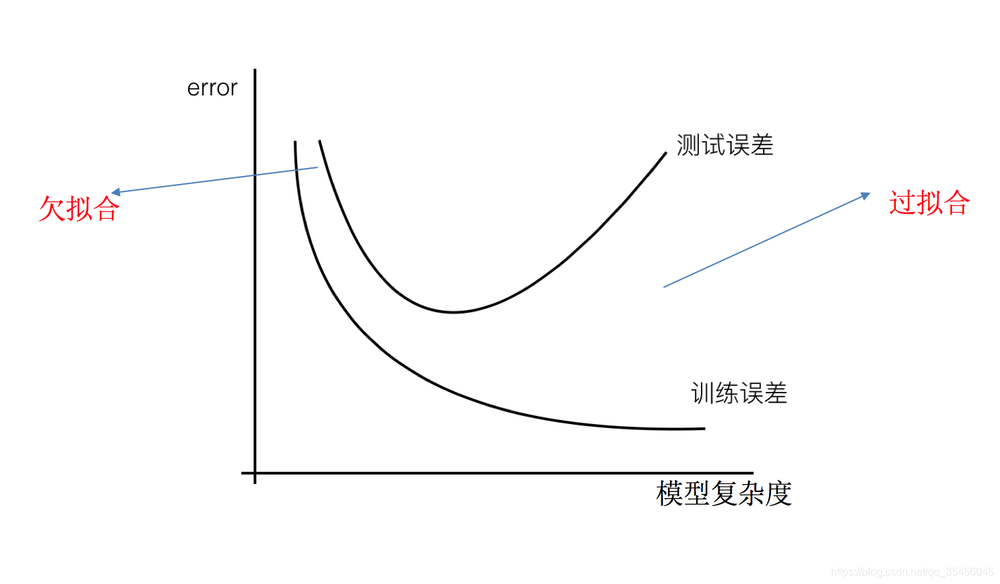

机器学习基础整理
时间不多，所以不做过多整理了。
部分数学

先验概率P(Wj)
后验概率P(Wj|x)
类条件概率密度p(x|wi)
类条件概率密度，即类别状态为  时的x的概率密度函数
时的x的概率密度函数
决策树：
信息熵和信息增益：



计算举例：
CLS：随机选择
ID3: 选出信息增益最大的属性，信息增益偏向于可能值较多的属性
信息增益率：属性A对数据集S的信息增益与数据集S关于属性A的信息熵的比
C4.5:先从候选划分属性中找出信息增益Information Gain高于平均水平的属性，再从中选择增益率GainRatio最高的
CART：基尼系数

矩阵的卷积运算：卷积核矩阵翻转180°，被卷积矩阵外围补充0构成m+n维，每个位置相乘求和
名词解释
主动学习
主动学习是机器学习的一个子领域，在统计学领域也叫查询学习或最优实验设计。主动学习方法尝试解决样本的标注瓶颈，通过主动优先选择最有价值的未标注样本进行标注，以尽可能少的标注样本达到模型的预期性能。
监督学习（Supervised learning）
数据集中的每个样本有相应的“正确答案”， 根据这些样本做出预测， 分有两类： 回归问题和分类问题。
无监督学习 （unsupervised learning）
这是对一类机器学习算法的统称，这些算法用于发现数据中的隐藏模式。之所以把这些算法称为无监督学习算法，是因为我们并不知道要找的模式是什么，而是要依靠算法来发现。不关注任何特定事物的预测 ，而是试图找到数据的有趣方面。比如聚类
半监督学习SSL
对于需要培训所需的标记和未标记数据量处于监督和非监督学习技术之间， 与监督学习相比，目标是减少所需的监督量。同时将无监督聚类的结果提升到用户的期望值。
线性可分
线性可分指的是可以用一个线性函数将两类样本分开， 描述的对象是数据集，或者说样本点。
间隔（margin）
假定我们用一个划分超平面把不同类别的样本分开，那么某个样本点与超平面的“距离”就是这个样本点相对该超平面的“间隔”。
KNN
最近邻 (k-Nearest Neighbors， KNN) 算法是一种分类算法，该算法的思想是： 一个样本与数据集中的k个样本最相似， 如果这k个样本中的大多数属于某一个类别， 则该样本也属于这个类别。
激活函数
激活函数，是在人工神经网络的神经元上运行的函数，负责将神经元的输入映射到输出端。激活函数对于人工神经网络模型去学习、理解非常复杂和非线性的函数来说具有十分重要的作用。它们将非线性特性引入到我们的网络中。在神经元中，输入通过加权，求和后，还被作用了一个函数，这个函数就是激活函数。引入激活函数是为了增加神经网络模型的非线性。若没有激活函数的每层都相当于矩阵相乘。没有激活函数的神经网络叠加了若干层之后，还是一个线性变换，与单层感知机无异。
独立同分布
输入空间中的所有样本服从一个隐含未知的分布，训练数据所有样本都是独立地从这个分布上采样而得。
线性可分
线性可分就是说可以用一个线性函数把两类样本分开，比如二维空间中的直线、三维空间中的平面以及高维空间中的线性函数。
多层感知器
多层感知器（Multilayer Perceptron,缩写MLP）是一种前向结构的人工神经网络，映射一组输入向量到一组输出向量。MLP可以被看作是一个有向图，由多个的节点层所组成，每一层都全连接到下一层。除了输入节点，每个节点都是一个带有非线性激活函数的神经元。使用反向传播算法的监督学习方法用来训练MLP。
ID3
ID3算法起源于概念学习系统（CLS），以信息熵的下降速度为选取测试属性的标准，即在每个节点选取还尚未被用来划分的具有最高信息增益的属性作为划分标准，然后继续这个过程，直到生成的决策树能完美分类训练样例。
神经网络
人工神经网络（英語：Artificial Neural Network，ANN），简称神经网络（Neural Network，NN）或類神經網絡，在机器学习和认知科学领域，是一种模仿生物神经网络（动物的中樞神經系統，特别是大脑）的结构和功能的数学模型或计算模型，用于对函数进行估计或近似。
聚类
聚类是将一组对象分组的任务。这样，同一组中的对象彼此之间比其他组中的对象更相似。
似然
似然函数（likelihood function，通常简写为likelihood，似然）。是在确定的结果下去推测产生这个结果的可能环境（参数）
剪枝
一棵树如果结点过多，表明该模型可能对数据进行了“过拟合”。
通过降低树的复杂度来避免过拟合的过程称为剪枝（pruning）。
k最近邻（k-Nearest Neighbors）
这种监督学习技术根据某个数据点周围距离最近的数据点的类型对该数据点进行分类，其中k是用作参考的数据点的个数。
同质集成
集成中只包含同种类型的个体学习器，例如“决策树集成”中全是决策树，“神经网络集成”中全是神经网络，称集成是“同质”的(homogeneous)。同质集成中的个体学习器亦称 “基学习器”(base learner) ，相应的学习算法称为 “基学习算法”(base learning algorithm)。
异质集成
集成中的个体学习器由不同的学习算法生成，例如同时包含决策树和神经网络，这样的集成是“异质”的(heterogenous)。异质集成中个体学习器常称为 “组件学习器”(component learner) 或直接称为个体学习器。
参数估计
我们建立一个含有众多参数的深度学习模型之后，需要通过多次的训练来找到最适合现实情况的那几组参数，所以模型的训练过程可以看作是参数估计（parameter estimation）。在统计概率学中对于参数估计的假设有两种不同的观点：
频率主义学派（Frequentist）认为参数虽然未知，但却是客观存在的固定值，因此，可通过优化似然函数等准则来确定参数值
贝叶斯学派（Beyesian）则认为参数是未观察到的随机变量，其本身也可有分布，因此，可假定参数服从一个先验分布，然后基于观测到的数据来计算参数的后验分布。
测试集 （test dataset）：用于评估预测模型的准确度和泛化能力。先用训练集生成模型，而后用测试集来测试模型。
二次取样 （subsampling）：用于防止神经网络模型出现过拟合问题，具体做法是通过取平均值对输入的训练数据进行“平滑化”处理。比如，可以通过二次取样缩小图像尺寸或降低颜色对比度。
反向传播 （backpropagation）：指在神经网络中给出有关预测是否准确的反馈。预测错误会沿着路径反向传播，这条路径上的神经元会重新调整其激活条件，以减少错误。
过拟合 （overfitting）：发生过拟合时，预测模型对数据中的随机波动过于敏感，并且将其误以为是持久模式。过拟合模型对当前数据有很高的预测准确度，但是泛化能力不强，即对未知数据的预测效果不佳。
补充：
鲁棒性
鲁棒性是指系统或设备在遇到不同的输入或环境变化时，能够保持正常工作，不受外界干扰的能力。它是一种衡量系统可靠性和稳定性的指标。
而在机器学习里，鲁棒性是指机器学习算法的能力，它可以处理输入数据的变化，而不会显著降低模型的性能。也就是说，即使输入数据出现噪声或异常，模型也可以有效地处理。
信息增益
用来衡量特征对数据集的重要性，用于衡量某个特征与目标变量之间的相关性。它表示在使用某个特征时，能够从数据中获得的信息量，从而帮助我们更好地理解数据，并且更好地预测数据。
香浓熵
香浓熵是一种信息增益度量方法，用来衡量一个特征值和一个类别之间的相关性。它可以帮助我们选择最有用的特征值，从而提高机器学习模型的准确性。
信息熵
香浓熵和信息熵是决策树学习中常用的两种不同的度量方法，它们都是用来衡量一个特征对于分类的重要性的。香浓熵是基于概率的，而信息熵是基于熵的，它们的主要区别在于计算方式不同。信息增益是一种基于信息熵的度量方法，它衡量的是特征值划分前后信息熵的变化，即在划分前后信息的减少程度。
泛化能力
指机器学习算法在解决新问题时的能力，即它在训练集中学习的知识能够应用到未见过的数据上。换句话说，泛化能力是指机器学习算法在未知数据上的表现能力，这是指机器学习算法在训练集上学习的知识能够应用到未见过的数据上，而不是只能处理训练集中的数据。
可解释性
知道结果是怎么来的，哪些特征的贡献比较大，能看到模型的决策过程是怎么样的。
黑盒
黑盒是指不提供内部模型的详细信息，只有输入和输出之间的关系，而没有提供内部算法的具体细节。因此，使用者无法完全理解算法的运作原理，只能通过输入和输出之间的关系来判断算法的性能。
噪声
噪声是指数据集里不是有用信息的数据。它可以是由于测量误差、采样误差或其他外部因素引起的。它会影响机器学习模型的准确性，因此需要从数据集中去除噪声。
正则化
指在训练机器学习模型时，为了防止过拟合而采取的措施。可以减少参数的数量和使参数值更加稳定。
损失函数
用来衡量模型在训练数据上的预测值与真实值之间的差距。
下采样
可以减少训练数据集中的噪声，从而提高模型的准确性。它通过从训练数据集中删除一些样本来实现。
重采样
重采样是指通过改变数据集中样本的数量、分布或其他特征，以改善模型的性能的过程。它可以帮助模型更好地处理不平衡的数据集，从而提高模型的准确性和可靠性。
k均值聚类 （k-means clustering）：这种无监督学习技术用于把相似的数据点划入同一个群组，其中k指群组数量。
PageRank 算法 （PageRank algorithm）：用于找出网络中占主导地位的节点。它基于节点的链接数以及链接的强度和来源对节点进行排序。
变量 （variable）：用于描述数据点。变量又叫属性、特征或维度，包括如下几类。
- 二值变量 （binary variable）：最简单的变量类型，它只有两个可选值（比如性别）。
- 分类变量 （categorical variable）：这种变量可以用来表示有两个以上选择的情况 （比如种族）。
- 整型变量 （integer variable）：这种变量用来表示整数（比如年龄）。
- 连续变量 （continuous variable）：这种变量最为精细，用来表示小数（比如价格）。
标准化 （standardization）：用于把所有变量统一到一个标准尺度上，类似于使用百分位数表示每个变量。
参数调优 （parameter tuning）：这是一个调整算法设置的过程，目标是提高模型的预测准确度，就像调节收音机的频道一样。
递归拆分 （recursive partitioning）：指反复拆分数据样本以得到同质组。决策树的生成过程就涉及递归拆分。
丢弃 （dropout）：用于防止神经网络模型出现过拟合问题。每次训练期间，随机丢弃一些神经元，以此迫使不同的神经元协同工作，以揭示训练样本的更多特征。
关联规则 （association rule）：这是一个无监督学习技术，用来揭示数据点之间是如何关联的，比如找出顾客经常同时购买哪些商品。识别关联规则的常用指标有 3 个：
- {X} 的支持度表示 X 项出现的频率；
- {X → Y} 的置信度表示当 X 项出现时 Y 项同时出现的频率；
- {X → Y} 的提升度表示 X 项和 Y 项一同出现的频率，并且考虑每项各自出现的频率。
回归分析 （regression analysis）：这种监督学习技术用于找出最佳拟合线，使得尽可能多的数据点位于这条线附近。最佳拟合线由带权重的组合预测变量得到。
混淆矩阵 （confusion matrix）：用于评价分类预测模型的准确度。除了总体分类准确度之外，混淆矩阵还会给出假正例率和假负例率。
集成方法 （ensembling）：用于组合多个预测模型，借以提高预测准确度。集成方法之所以非常有效，是因为正确的预测结果往往彼此强化，错误的预测结果则相互抵消。
激活规则 （activation rule）：用于指定激活神经元所必需的输入信号的来源和强度。神经元的激活状态在神经网络中传播，最后产生预测结果。
监督学习 （supervised learning）：这是对一类机器学习算法的统称。之所以把这些算法称为监督学习算法，是因为它们的预测都基于数据中已有的模式。
降维 （dimension reduction）：指减少变量的个数，比如通过组合高度相关的变量来实现。
交叉验证 （cross-validation）：这个方法通过把数据集划分成若干组来对模型进行反复测试，从而最大限度地利用可用的数据。在单次迭代中，除了某一组之外，其他各组都被用来训练预测模型，而后使用留下的那组测试模型。这个过程会重复进行，直到每一组都测试过模型，并且只测试过一次。模型的最终预测准确度取所有迭代评估结果的平均值。
决策树 （decision tree）：这种监督学习技术通过一系列二元选择题来拆分数据样本，以获得同质组。虽然决策树容易理解和可视化，但也容易出现过拟合问题。
欠拟合 （underfitting）：发生欠拟合时，预测模型过于迟钝，以至于忽略了数据中的基本模式。欠拟合模型很可能忽视数据中的重要趋势，这会导致预测模型对当前数据和未知数据的预测准确度较差。
强化学习 （reinforcement learning）：这是对一类机器学习算法的统称，指使用数据中的模式做预测，并根据越来越多的反馈结果不断改进。
神经网络 （neural network）：这种监督学习技术使用神经元层来进行学习和预测。虽然神经网络的预测准确度很高，但其复杂性使得大部分预测结果难以解释。
梯度下降 （gradient descent）：这种方法用于调整模型参数。它先为一组参数值估计初始值，而后通过一个迭代过程，把这些估计值应用于每个数据点做预测，然后调整估计值，以减少整体预测误差。
先验原则 （apriori principle）：如果某个项集出现得不频繁，那么包含它的任何更大的项集必定也出现得不频繁。先验原则有助于减少需要考虑的项集组合的个数。
相关系数 （correlation coefficient）：用于衡量两个变量之间的线性关系。相关系数的取值范围是–1 到 1，它提供了两部分信息。
- 关联强度：当相关系数为–1 或 1 时，关系最强；当相关系数为 0 时，关系最弱。
- 关联方向：当两个变量同向变化时，相关系数为正，否则为负。
训练集 （training dataset）：用于生成预测模型。模型生成之后，再用测试集评估模型的预测准确度。
验证 （validation）：指评估模型对新数据的预测准确度。具体做法是把当前的数据集划分成两部分：一部分是训练集，用来生成和调整预测模型；另一部分是测试集，用来充当新数据并评估模型的预测准确度。
正则化 （regularization）：用于防止预测模型出现过拟合问题，具体做法是引入惩罚参数，通过人为增大预测误差对模型复杂度的增加进行惩罚。这使得我们在优化模型参数时需要同时考虑复杂度和准确度。
支持向量机 （support vector machine）：这种监督学习技术用于把数据点分为两组，具体做法是在两组的外围数据点（也叫支持向量）的中间画一条分界线。它使用核技巧来高效地求得带凸弧的决策边界。
主成分分析 （principal component analysis）：这种无监督学习技术把数据中富含信息的变量组合成新变量，以此减少要分析的变量个数。新变量被称为主成分。
简答
1、什么是outlier？为什么k-means对outlier敏感？
离群点。在数据中有一个或几个数值与其他数值相比差异较大。K-means对异常值较为敏感，因为一个集合内的元素均值易受到一个极大值的影响。
2、基于最小错误率的贝叶斯分类器 的计算。
使错误率最小的决策就是使后验概率最大的决策 。 后验概率的计算使用贝叶斯公式计算，因此要已知先验概率p(ωi)以及类条件概率密度p(x|wi)
3、简述Parzen窗方法的原理和过程。证明为什么可以用高斯概率密度函数作为窗函数。
Parzen窗方法的基本思想是利用一定范围内的各点密度的平均值对总体密度函数进行估计。
具备密度函数的基本性质（非负性和积分为1） ，高斯概率密度函数满足要求
4、什么是过拟合？为什么会出现过拟合？如何解决过拟合问题？
过拟合：为了得到一致假设而使假设变得过度严格。
原因
•数据量太小：训练集的数量级和模型的复杂度不匹配。
•训练集和测试集特征分布不一致
•样本里的噪音数据干扰过大，大到模型过分记住了噪音的特征，反而忽略了真实的输入输出间的关系，从而减小了具有一般性的规律。
•过度训练，权值学习迭代次数足够多(Overtraining)，拟合了训练数据中的噪声和训练样例中没有代表性的特征
•模型复杂度太大，使用了过强的模型复杂度(model complexity)的能力。（参数多并且过训练），训练集的数量级要小于模型的复杂度，这使得模型无法真正了解整个数据的真实分布。
解决方案
模型层面
•simpler model structure
调小模型复杂度，使其适合自己训练集的数量级(缩小宽度和减小深度)
•regularization
在损失函数中加入正则项来惩罚模型的参数，以此来降低模型的复杂度，常见的添加正则项的正则化技术有L1，L2正则化。
•dropout
这个方法在神经网络里面很常用。dropout方法是ImageNet中提出的一种方法，通俗一点讲就是dropout方法在训练的时候让神经元以一定的概率不工作
•Batch Normalization
•BM算法是一种非常有用的正则化方法，可以让大型的卷积神经网络快速收敛，同时还能提高分类的准确率，而且可以不需要使用局部响应归一化处理，也可以不需要加入Dropout。
•BM算法会将每一层的输入值做归一化处理，并且会重构归一化处理之后的数据，确保数据的分布不会发生变化。
•ensemble
集成学习算法也可以有效的减轻过拟合。Bagging通过平均多个模型的结果，来降低模型的方差。Boosting不仅能够减小偏差，还能减小方差。
•Bagging和Boosting
数据层面
•从数据源头获取更多数据
•数据增强（Data Augmentation）：通过一定规则扩充数据。如在物体分类问题里，物体在图像中的位置、姿态、尺度，整体图片明暗度等都不会影响分类结果。我们就可以通过图像平移、翻转、缩放、切割等手段将数据库成倍扩充
训练层面
•提前终止迭代（Early stopping）
对模型进行训练的过程即是对模型的参数进行学习更新的过程，这个参数学习的过程往往会用到一些选代方法，如梯度下降(Gradientdescent)学习算法。Earlystopping便是一种迭代次数截断的方法来防止过拟合的方法，即在模型对训练数据集迭代收敛之前停止迭代来防止过拟合。
Early stopping方法的具体做法是，在每一个Epoch结束时(一个Epoch集为对所有的训练数据的一轮遍历)计算validationdata的accuracy，当accuracy不再提高时，就停止训练。
•这种做法很符合直观感受，因为accurary都不再提高了，在继续训练也是无益的，只会提高训练的时间。
•在训练的过程中，记录到目前为止最好的validation accuracy，当连续（10次或其他值）Epoch(或者更多次)没达到最佳accuracy时，则可以认为accuracy不再提高了。此时便可以停止迭代了(Early Stopping)。

5、贝叶斯计算问题
两个一模一样的碗，一号碗有30颗水果糖和10颗巧克力糖，二号碗有水果糖和巧克力糖各20颗。现在随机选择一个碗，从中摸出一颗糖，发现是水果糖。请问这颗水果糖来自一号碗的概率有多大？

6、简述一下k均值聚类的基本思想，并说明如何初始化k
将数据集分裂成 k 个非空子集
计算当前聚类的质心 (质心为聚类的中心)
将每个数据分配至和质心距离最短的聚类
返回步骤2, 直至所有的数据均不重新分配
k是需要提前约定的，它代表期望的种类数。但有时会不确定数据的种类数目，这种情况可以多次尝试使用不同的k值进行聚类，并选取其中最符合的
7、简述一下SVM的基本思想，针对线性不可分问题，SVM有哪些方法
它是将向量映射到一个更高维的空间里，在这个空间里建立有一个最大间隔超平面。在分开数据的超平面的两边建有两个互相平行的超平面，分隔超平面使两个平行超平面的距离最大化。
解决这种线性不可分的情况基本的思路有两种：
加入松弛变量和惩罚因子，找到相对“最好”超平面，这里的“最好”可以理解为尽可能地将数据正确分类；
使用核函数，将低维的数据映射到更高维的空间，使得在高维空间中数据是线性可分的，那么在高维空间使用线性分类模型即可；
8、简述一下什么是bagging算法，并比较bagging与AdaBoost的异同
bagging 从训练集从进行子抽样组成每个基模型所需要的子训练集，对所有基模型预测的结果进行综合产生最终的预测结果。

Bagging和Boosting的区别：

1）样本选择上：
Bagging：训练集是在原始集中有放回选取的，从原始集中选出的各轮训练集之间是独立的。
Boosting：每一轮的训练集不变，只是训练集中每个样例在分类器中的权重发生变化。而权值是根据上一轮的分类结果进行调整。
2）样例权重：
Bagging：使用均匀取样，每个样例的权重相等
Boosting：根据错误率不断调整样例的权值，错误率越大则权重越大。
3）预测函数：
Bagging：所有预测函数的权重相等。
Boosting：每个弱分类器都有相应的权重，对于分类误差小的分类器会有更大的权重。
4）并行计算：
Bagging：各个预测函数可以并行生成
Boosting：各个预测函数只能顺序生成，因为后一个模型参数需要前一轮模型的结果。
9、简述一下线性回归，并比较岭回归和lasso回归的区别
岭回归与Lasso回归的出现是为了解决线性回归出现的过拟合以及在通过正规方程方法求解θ的过程中出现的x转置乘以x不可逆这两类问题的，这两种回归均通过在损失函数中引入正则化项来达到目的。
岭回归与Lasso回归最大的区别在于岭回归引入的是L2范数惩罚项，Lasso回归引入的是L1范数惩罚项，Lasso回归能够使得损失函数中的许多θ均变成0，这点要优于岭回归，因为岭回归是要所有的θ均存在的，这样计算量Lasso回归将远远小于岭回归。
Lasso和岭回归的区别很好理解，在优化过程中，最优解为函数等值线与约束空
间的交集，正则项可以看作是约束空间。可以看出二范的约束空间是一个球形，
一范的约束空间是一个方形，这也就是二范会得到很多参数接近0的值，而一范
会尽可能非零参数最少。
10、从Graph embedding、word embedding、Graph CNN 中选择一个你熟悉的并进行介绍
图嵌入，词嵌入，图卷积神经网络
图卷积神经网络，实际上跟CNN的作用一样，就是一个特征提取器，只不过它的对象是图数据。GCN精妙地设计了一种从图数据中提取特征的方法，从而让我们可以使用这些特征去对图数据进行节点分类（node classification）、图分类（graph classification）、边预测（link prediction） ，还可以顺便得到 图的嵌入表示（graph embedding）
11、解释训练误差、泛化误差，并画图标出欠拟合、过拟合等。
机器学习模型在训练数据集上表现出的误差叫做训练误差；
在任意一个测试数据样本上表现出的误差的期望值叫做泛化误差。

12、验证集有什么作用？怎样使模型学习到全部数据？
测试模型的泛化能力。k折交叉验证。
13、为什么梯度下降选择负梯度优化目标函数？
梯度的方向实际就是函数在此点上升最快的方向！而我们需要朝着下降最快的方向走，自然就是负的梯度的方向
14、学习率过大或过小有什么后果？如何调整学习率？怎么选择学习率
当学习率设置的 过小 时， 收敛过程将变得十分缓慢 。 而当学习率设置的 过大 时， 梯度可能会在最小值附近来回震荡，甚至可能无法收敛 。
在每次迭代后，使用估计的模型的参数来查看误差函数的值，如果相对于上一次迭代，错误率减少了，就可以增大学习率如果相对于上一次迭代，错误率增大了，那么应该重新设置上一轮迭代的值，并且减少学习率到之前的50%。
刚开始训练时：学习率以 0.01 ~ 0.001 为宜。
一定轮数过后：逐渐减缓。
接近训练结束：学习速率的衰减应该在100倍以上。
15如何减少决策树过拟合
合理、有效地抽样，用相对能够反映业务逻辑的训练集去产生决策树；
剪枝：提前停止树的增长或者对已经生成的树按照一定的规则进行后剪枝。
16激活函数为什么是非线性的？
如果使用线性激活函数，那么输入跟输出之间的关系为线性的，无论神经网络有多少层都是线性组合。
使用非线性激活函数是为了增加神经网络模型的非线性因素，以便使网络更加强大，增加它的能力，使它可以学习复杂的事物，复杂的表单数据，以及表示输入输出之间非线性的复杂的任意函数映射。
17、高斯混合模型（Gaussian Mixture Model ，GMM）
也是原型聚类采用概率模型来表达原型，即通过统计得到每个样本点属于各个类的概率，而不是判定它完全属于一个类，所以有时也会被称为软聚类。
18、简述KNN的基本思想和优缺点
在训练集的数据和标签已知的情况下，输入测试数据，将测试数据的特征与训练集中对应的特征进行相互比较，找到训练与之最为相似的前K个数据，则该测试数据对应类别就是K个数据中出现的次数做多的哪一类
算法的优点：
简单易于理解，无参数估计，不需要进行训练
适合对稀疏事件进行分类
特别适合多分类问题，再多分类问题上比SVM好用，效果好一些
算法的缺点：
当样本分布不均匀时，容易判别错误
19、交叉验证法
它将原始数据分成K组 (K-Fold)，将每个子集数据分别做一次验证集，其余的K-1组子集数据作为训练集，这样会得到K个模型。. 这K个模型分别在验证集中评估结果，最后的误差MSE (Mean Squared Error)加和平均就得到交叉验证误差。. 交叉验证有效利用了有限的数据，并且评估结果能够尽可能接近模型在测试集上的表现，可以做为模型优化的指标使用。
如何让模型学到全部的数据：使用k折交叉验证
20、在SVM支持向量机中，简述为什么要使margin最大化？
SVM 为什么采用间隔最大化?
（1）最优超平面是唯一的
（2）提升模型泛化性，提升预测结果的鲁棒性
21、简述ID3的优缺点
Advantages：选择分区后信息增益大的分区属性，即使用该属性获得的子集纯度越高，不确定性越小。
Disadvantage：信息增益偏向于可能值较多的属性
22、简述集成思想
集成学习利用一些方法改变原始训练样本的分布，构建多个不同的学习者器，然后将这些学习器组合起来完成学习任务，集成学习可获得比单一学习器显著优越的泛化性能，对 “弱学习器” (weak learner) 尤为明显。
23、简要说明梯度下降法和牛顿法的基本思想和区别
梯度下降法是一种迭代算法。选取适当的初值x(0)，不断迭代，更新x的值，进行目标函数的极小化，直到收敛。因为负梯度方向是使函数值下降最快的方向，在迭代的每一步，以扶梯度方向更新x的值，从而达到减少函数值的目的。
牛顿法收敛速度快，每一步需要求解目标函数的海赛矩阵的逆矩阵，计算比较复杂
24、各方法优缺点
神经网络：隐藏层映射到较低维空间；搜索空间有多个局部最小值；训练费用昂贵；分类极其高效；需要隐藏单位和图层的数量；典型域中的准确度非常高
支持向量机：内核映射到一个非常高维度的空间；搜索空间有唯一的的最小值；培训非常有效；分类极其高效；内核并花费两个参数来选择；典型域中的准确度非常高；鲁棒性强
K近邻：算法采用测量不同特征值之间的距离的方法进行分类。
优点： 1.简单好用，容易理解，精度高，理论成熟，既可以用来做分类也可以用来做回归； 2.可用于数值型数据和离散型数据； 3.训练时间复杂度为O(n)；无数据输入假定；
4.对异常值不敏感
缺点： 1.计算复杂性高；空间复杂性高； 2.样本不平衡问题（即有些类别的样本数量很多，而其它样本的数量很少）； 3.一般数值很大的时候不用这个，计算量太大。但是单个样本又不能太少 否则容易发生误分。 4.最大的缺点是无法给出数据的内在含义。
朴素贝叶斯 优点： 1.生成式模型，通过计算概率来进行分类，可以用来处理多分类问题， 2.对小规模的数据表现很好，适合多分类任务，适合增量式训练，算法也比较简单。
缺点： 1.对输入数据的表达形式很敏感， 2.由于朴素贝叶斯的“朴素”特点，所以会带来一些准确率上的损失。 3.需要计算先验概率，分类决策存在错误率。
决策树 优点： 1.概念简单，计算复杂度不高，可解释性强，输出结果易于理解； 2.数据的准备工作简单， 能够同时处理数据型和常规型属性，其他的技术往往要求数据属性的单一。 3.对中间值得确实不敏感，比较适合处理有缺失属性值的样本，能够处理不相关的特征； 4.应用范围广，可以对很多属性的数据集构造决策树，可扩展性强。决策树可以用于不熟悉的数据集合，并从中提取出一些列规则 这一点强于KNN。
缺点： 1.容易出现过拟合； 2.对于那些各类别样本数量不一致的数据，在决策树当中,信息增益的结果偏向于那些具有更多数值的特征。 3. 信息缺失时处理起来比较困难。 忽略数据集中属性之间的相关性。